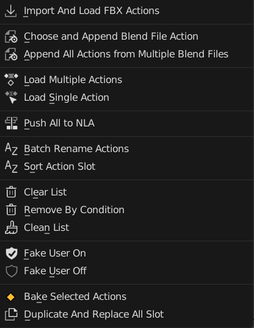
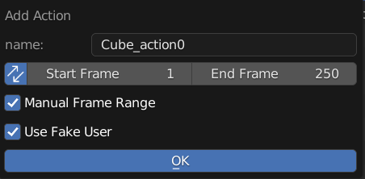
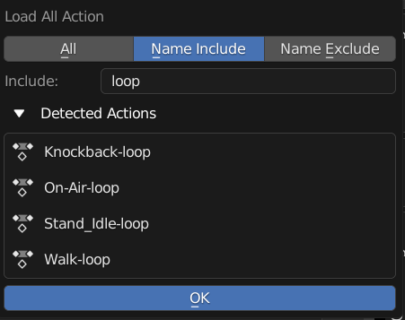
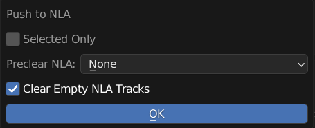
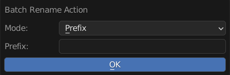
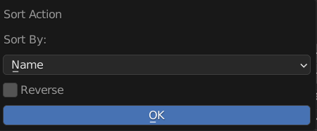
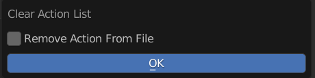
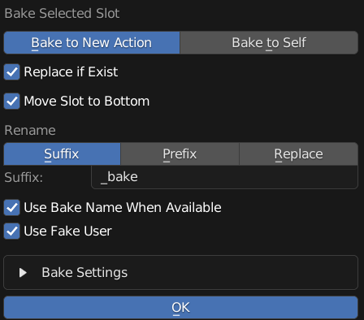

Menu Operators
Operators to Manage Object Action List
Add New Action
Add New Empty Action to this Object
Name: New Action Name
Sync: Also Update Scene Frame Range Live
Manual Frame Range: Use Manual Frame Range
Manual Frame Range = True
Start: Start Frame
End: End Frame
Use Fake User: New Action Will Use Fake User
Import And Load FBX Actions
A Wrapper Operator for Import FBX, Also Have Options to Use BetterFBX for Importing if is installed
It Will Import the FBX and Remove All the Imported Items except Actions
The Action is Then Loaded to the Object

Use File Name as Action Name: Imported Action Will Use Its own File name, Useful for importing in Mixamo Animation
FBX Importer: Import Method
Build In: Uses Build in FBX importer
BetterFBX: Uses BetterFBX if Better FBX is Installed.
Import Settings: These is the Same as either import fbx settings or betterfbx settings.
Warning
This Operator Will Remove Orphan Data, Make Sure all wanted data are not orphan data
Choose and Append Blend File Action
Pick and Choose Action from One Blend File to Append From and Load to this Object
After Choosing a blend file, a pop up similar to Action Loader will appear, You can Pick and Choose which action to append by clicking on the action
Search Filter Also works like Action Loader

Append All Actions From Multiple Blend Files
Append All or Filtered Actions From Multiple Blend Files and Load to Action

Use Filter: Enable Filter
Use Filter: Filter Appended Action
Include / Exclude: Filter Method
Include: Check if Action Name Include Filter String
Exclude: Check if Action Name Exclude Filter String
Load Multiple Actions
Operator Version of Action Loader, Loads Filtered Existing Action in Blend File
All, Name Include, Name Exclude: Filter Method
All: No Filter
Name Include: Check if Action Name Include Filter String
Name Exclude: Check if Action Name Exclude Filter String
Filter String: Filter String
Detected Action: Preview Detected Actions that will be loaded to the object when after running operator
Push All Action to NLA
Push All Action in Object Action Manager to NLA
Selected Only: Only Push Selected Action in the List
Preclear NLA: Method of Dealing with Existing NLA Strips
Skip Push if Exist: Skip Pushing Action if the Action Already in NLA
Clear All NLA Tracks: Clear All NLA Tracks Before Pushing
None: Do Nothing
Clear Empty NLA Tracks: Remove NLA Tracks if Empty
Batch Rename Actions
Batch Rename All the Actions in List, Adding Prefix, Suffix, or Find and Replace
Mode: Method of Rename
Prefix: Prepend String A to the Start of the Name
Suffix: Append String A to the End of the Name
Replace: Find String A and Replace with String Batch
Remove: Remove String A from Name
String A (Prefix / Suffix / Find): Use for Prefix, Suffix, Find and Remove
String B (Replace): Stirng to be Replaced
Sort Action Slot
Sort Action Slot in Order
Reverse: Sort in Reverse Order
Mode: Sort By Method
Name: Sort by Action Name
Range Size: Sort by Action Frame Range Size
Clear Action List
Clear All Action in List
Remove Action From File: Also Remove Action from Blend File instead of Just Unload from object
Remove Action By Condition
Remove Action from List By Condition

Condition: Condition to Remove Action
Name: Sort by Action Name
Range Size: Sort by Action Frame Range Size
- Condition = Name
Include / Exclude: Filter Method
Name Include: Check if Action Name Include Filter String
Name Exclude: Check if Action Name Exclude Filter String
Condition = Range Size
Operator: Type of Operator for Comparison
Greater or Equal: Match if Action Frame Range Size is Greater or Equal than Search Size
Lesser or Equal: Match if Action Frame Range Size is Lesser or Equal than Search Size
Equal: Match if Action Frame Range Size is Equal than Search Size
Frame Range Size: Frame Range Size Use to Compare
Use Curve Frame Range: Ignore Manual Frame Range
Remove Action: Also Remove Action from Blend File instead of Just Unload from object
Deteced Action: Preview Detected Actions that will be removed
Clean List
Remove Action Slot with Missing Action
Fake User On
Turn On All Fake User of Action in Object’s Action List
Fake User Off
Turn Off All Fake User of Action in Object’s Action List
Bake Selected Actions
Bake Selected Actions in the Object Action List
Bake to New Action / Bake to Self: Bake action into a new action, or bake to current action
Replace if Exist: Replace Action if Already Exist Action with Name
Move Slot to Bottom: Move Baked Action to the Bottom of the List
Rename: Rename Settings for Baked Action
Prefix: Prepend String A to the Start of the Name
Suffix: Append String A to the End of the Name
Replace: Find String A and Replace with String Batch
String A (Prefix / Suffix / Find): Use for Prefix, Suffix, Find and Remove
String B (Replace): Stirng to be Replaced
Use Bake Name When Available: Uses Bake Name in Misc Settings of Action if is not empty
Use Fake User: Enable Fake User for Baked Action
Bake Settings: Same Settings with the Blender Build in Bake Operator
Duplicate and Replace All Slot
Duplicate All Action in the List and Replace it All in Slot
Useful when you want to make a variation set of animation

Mode: Rename Method
Prefix: Prepend String A to the Start of the Name
Suffix: Append String A to the End of the Name
Replace: Find String A and Replace with String Batch
String A (Prefix / Suffix / Find): Use for Prefix, Suffix, Find and Remove
String B (Replace): Stirng to be Replaced
Use Fake User: Enable Fake User for Baked Action